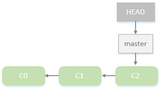
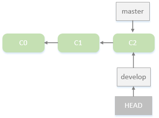
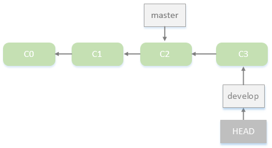
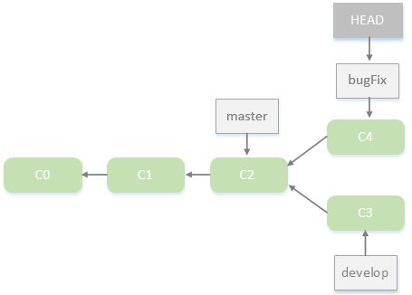
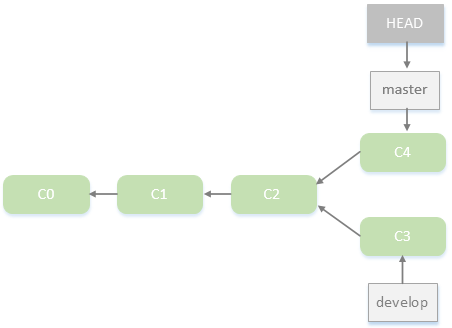
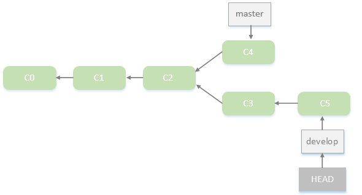
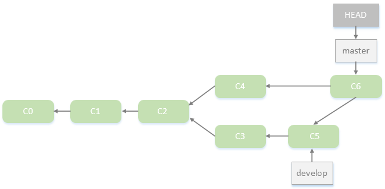

假设目前正在开发公司网站，并且使用Git管理项目代码，常见的流程大体如下:
1.开发公司网站。
2.为了开发某个新功能新建一个分支（假如叫develop），并在该分支上进行开发。
3.接到测试组的Bug反馈，返回主分支，新建一个新的分支（bugFix），在该分支上修复Bug，然后与主分支master合并。
4.将分支切换回develop，继续开发新功能，结束后和主分支master合并。
分支的新建与切换
假如公司网站项目已经开发了一段时间，并且使用Git提交了几次更新，提交历史如下图所示： 
为了开发新功能，新建分支develop并切换到该分支：
|
|
也可以使用命令git checkout -b直接新建并切换：
|
|
执行上述命令后，仓库历史大致如下所示： 
Git新建了一个分支指针develop，然后将HEAD指向develop。
接下来在该分支上开心的开发新功能，比如新建了公司网站About页面，添加了内容然后提交了此次修改：
|
|
此时，仓库历史如下图所示： 
这时候接到测试组公司网站主页index.html的Bug反馈，于是将分支切换回主分支master，然后新建分支bugFix，修复Bug，并提交该修复：
|
|
此时，仓库历史如下图所示： 
假如确定Bug修复后，可以切换回master分支，然后将bugFix和master分支合并：
|
|
合并时出现了“Fast forward”的提示。如果顺着一个分支走下去可以到达另一个分支的话，那么Git在合并两者时，只会简单地把指针右移，因为这种单线的历史分支不存在任何需要解决的分歧，所以这种合并过程可以称为快进（Fast forward）。
此时bugFix分支已经完成了历史使命，可以使用命令git branch -d将其删除：
|
|
合并master与bugFix，并删除bugFix分支后，仓库历史如下图所示： 
Bug修复后，切换回develop分支继续开发新的功能，并且提交：
|
|
此时，仓库历史如下图所示： 
分支合并
和合并master分支与bugFix分支那样，合并master与develop分支过程也差不多：
|
|
由于master指向的C4并不是develop指向C5的直接祖先C2，所以合并方式不是“Fast forward”，Git 会用两个分支的末端（C4 和 C5）以及它们的共同祖先（C2）进行一次简单的三方合并计算。
合并master和develop后，仓库历史如下图所示： 
解决合并冲突
假如在不同分支中都对同一个文件进行了修改，那么合并的时候就会发生冲突。比如在master分支和develop分支上都修改了About.html页面，然后进行分支合并：
|
|
Git作了合并，但没有提交，它会停下来等你解决冲突。
可是使用命令git status查看哪些文件存在冲突：
|
|
任何包含未解决冲突的文件都会以未合并（unmerged）的状态列出。编辑About.html页面，可看到文件包含类似下面部分的内容：
|
|
可以看到 ======= 隔开的上半部分，是HEAD（即 master 分支，在运行merge命令时所切换到的分支）中的内容，下半部分是在develop分支中的内容。解决冲突的办法无非是二者选其一或者由你亲自整合到一起。
|
|
《pro git》学习笔记